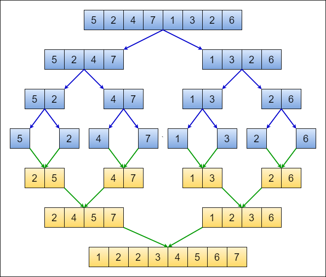
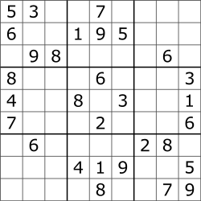
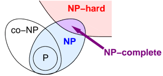

Let's understand which problem comes under which category.

P problems refer to problems where an algorithm would take a polynomial amount of time to solve, or where Big-O is a polynomial (i.e. O(1), O(n), O(n²), etc). These are problems that would be considered ‘easy’ to solve, and thus do not generally have immense run times.
NP problems were a little harder for me to understand, but I think this is what they are. In terms of solving a NP problem, the run-time would not be polynomial. It would be something like O(n!) or something much larger. However, this class of problems can be given a specific solution, and checking the solution would have a polynomial run-time. An example that helped me understand this a little better was a Sudoku game.

In order to solve this entire puzzle, the algorithm would have to check each 3x3 matrix to see which numbers are missing, then each row, then each column, and then make sure there are no repetitions of any digit from 0–9. This becomes more complex because the number of digits that are missing is inconsistent in each row, column, and matrix (i.e. top-left matrix is missing 4 digits while top-right matrix is missing 8 digits). Solving this problem would not have a polynomial run-time. However, if you were to feed this puzzle with a possible solution, it would be much less complex to check if there are any repetitions in the rows, columns and matrices. This is a simple check which would have a polynomial run-time.
In essence, NP class problems don’t have a polynomial run-time to solve, but have a polynomial run-time to verify solutions (difficult to solve, easy to check a given answer).

A problem is classified as NP-Hard when an algorithm for solving it can be translated to solve any NP problem. Then we can say, this problem is at least as hard as any NP problem, but it could be much harder or more complex.

NP-Complete problems are problems that live in both the NP and NP-Hard classes. This means that NP-Complete problems can be verified in polynomial time and that any NP problem can be reduced to this problem in polynomial time.